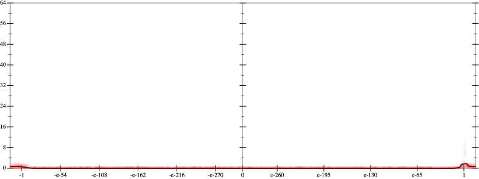
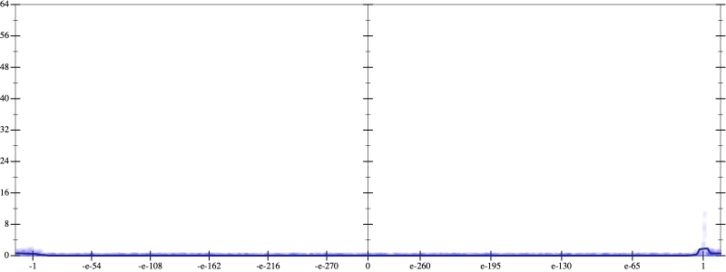
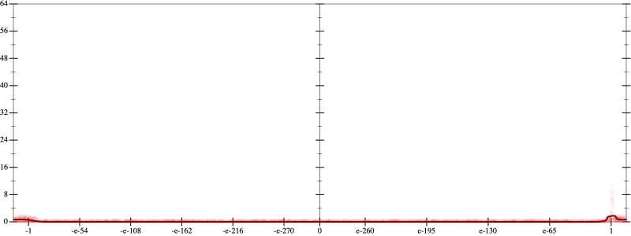
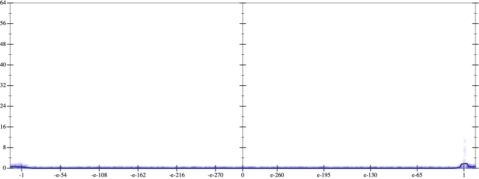

Initial program 0.1
\[\left(\left(\left(\left(\left(\left(1.0 + -7.0 \cdot x\right) + 10.5 \cdot \left(x \cdot x\right)\right) + -5.833333 \cdot \left(\left(x \cdot x\right) \cdot x\right)\right) + 1.458333 \cdot \left(\left(\left(x \cdot x\right) \cdot x\right) \cdot x\right)\right) + -0.175 \cdot \left(\left(\left(\left(x \cdot x\right) \cdot x\right) \cdot x\right) \cdot x\right)\right) + 0.009722 \cdot \left(\left(\left(\left(\left(x \cdot x\right) \cdot x\right) \cdot x\right) \cdot x\right) \cdot x\right)\right) + -0.000198 \cdot \left(\left(\left(\left(\left(\left(x \cdot x\right) \cdot x\right) \cdot x\right) \cdot x\right) \cdot x\right) \cdot x\right)\]
Applied simplify0.1
\[\leadsto \color{blue}{\left(\left(x \cdot x\right) \cdot \left(10.5 + -5.833333 \cdot x\right) + \left(x \cdot -7.0 + 1.0\right)\right) + \left(\left(\left(x \cdot x\right) \cdot \left(x \cdot x\right)\right) \cdot \left(1.458333 + -0.175 \cdot x\right) + \left({x}^{3} \cdot {x}^{3}\right) \cdot \left(-0.000198 \cdot x + 0.009722\right)\right)}\]
- Using strategy
rm Applied unpow30.1
\[\leadsto \left(\left(x \cdot x\right) \cdot \left(10.5 + -5.833333 \cdot x\right) + \left(x \cdot -7.0 + 1.0\right)\right) + \left(\left(\left(x \cdot x\right) \cdot \left(x \cdot x\right)\right) \cdot \left(1.458333 + -0.175 \cdot x\right) + \left({x}^{3} \cdot \color{blue}{\left(\left(x \cdot x\right) \cdot x\right)}\right) \cdot \left(-0.000198 \cdot x + 0.009722\right)\right)\]
Applied associate-*r*0.1
\[\leadsto \left(\left(x \cdot x\right) \cdot \left(10.5 + -5.833333 \cdot x\right) + \left(x \cdot -7.0 + 1.0\right)\right) + \left(\left(\left(x \cdot x\right) \cdot \left(x \cdot x\right)\right) \cdot \left(1.458333 + -0.175 \cdot x\right) + \color{blue}{\left(\left({x}^{3} \cdot \left(x \cdot x\right)\right) \cdot x\right)} \cdot \left(-0.000198 \cdot x + 0.009722\right)\right)\]
- Using strategy
rm Applied add-exp-log0.1
\[\leadsto \left(\left(x \cdot x\right) \cdot \left(10.5 + -5.833333 \cdot x\right) + \left(x \cdot -7.0 + 1.0\right)\right) + \left(\left(\left(x \cdot x\right) \cdot \color{blue}{e^{\log \left(x \cdot x\right)}}\right) \cdot \left(1.458333 + -0.175 \cdot x\right) + \left(\left({x}^{3} \cdot \left(x \cdot x\right)\right) \cdot x\right) \cdot \left(-0.000198 \cdot x + 0.009722\right)\right)\]
Applied add-exp-log0.1
\[\leadsto \left(\left(x \cdot x\right) \cdot \left(10.5 + -5.833333 \cdot x\right) + \left(x \cdot -7.0 + 1.0\right)\right) + \left(\left(\color{blue}{e^{\log \left(x \cdot x\right)}} \cdot e^{\log \left(x \cdot x\right)}\right) \cdot \left(1.458333 + -0.175 \cdot x\right) + \left(\left({x}^{3} \cdot \left(x \cdot x\right)\right) \cdot x\right) \cdot \left(-0.000198 \cdot x + 0.009722\right)\right)\]
Applied prod-exp0.1
\[\leadsto \left(\left(x \cdot x\right) \cdot \left(10.5 + -5.833333 \cdot x\right) + \left(x \cdot -7.0 + 1.0\right)\right) + \left(\color{blue}{e^{\log \left(x \cdot x\right) + \log \left(x \cdot x\right)}} \cdot \left(1.458333 + -0.175 \cdot x\right) + \left(\left({x}^{3} \cdot \left(x \cdot x\right)\right) \cdot x\right) \cdot \left(-0.000198 \cdot x + 0.009722\right)\right)\]
- Using strategy
rm Applied add-cbrt-cube0.1
\[\leadsto \left(\left(x \cdot x\right) \cdot \color{blue}{\sqrt[3]{\left(\left(10.5 + -5.833333 \cdot x\right) \cdot \left(10.5 + -5.833333 \cdot x\right)\right) \cdot \left(10.5 + -5.833333 \cdot x\right)}} + \left(x \cdot -7.0 + 1.0\right)\right) + \left(e^{\log \left(x \cdot x\right) + \log \left(x \cdot x\right)} \cdot \left(1.458333 + -0.175 \cdot x\right) + \left(\left({x}^{3} \cdot \left(x \cdot x\right)\right) \cdot x\right) \cdot \left(-0.000198 \cdot x + 0.009722\right)\right)\]
Applied add-cbrt-cube0.1
\[\leadsto \left(\color{blue}{\sqrt[3]{\left(\left(x \cdot x\right) \cdot \left(x \cdot x\right)\right) \cdot \left(x \cdot x\right)}} \cdot \sqrt[3]{\left(\left(10.5 + -5.833333 \cdot x\right) \cdot \left(10.5 + -5.833333 \cdot x\right)\right) \cdot \left(10.5 + -5.833333 \cdot x\right)} + \left(x \cdot -7.0 + 1.0\right)\right) + \left(e^{\log \left(x \cdot x\right) + \log \left(x \cdot x\right)} \cdot \left(1.458333 + -0.175 \cdot x\right) + \left(\left({x}^{3} \cdot \left(x \cdot x\right)\right) \cdot x\right) \cdot \left(-0.000198 \cdot x + 0.009722\right)\right)\]
Applied cbrt-unprod0.1
\[\leadsto \left(\color{blue}{\sqrt[3]{\left(\left(\left(x \cdot x\right) \cdot \left(x \cdot x\right)\right) \cdot \left(x \cdot x\right)\right) \cdot \left(\left(\left(10.5 + -5.833333 \cdot x\right) \cdot \left(10.5 + -5.833333 \cdot x\right)\right) \cdot \left(10.5 + -5.833333 \cdot x\right)\right)}} + \left(x \cdot -7.0 + 1.0\right)\right) + \left(e^{\log \left(x \cdot x\right) + \log \left(x \cdot x\right)} \cdot \left(1.458333 + -0.175 \cdot x\right) + \left(\left({x}^{3} \cdot \left(x \cdot x\right)\right) \cdot x\right) \cdot \left(-0.000198 \cdot x + 0.009722\right)\right)\]
Applied simplify0.1
\[\leadsto \left(\sqrt[3]{\color{blue}{\left(\left({x}^{3} \cdot {x}^{3}\right) \cdot \left(10.5 + -5.833333 \cdot x\right)\right) \cdot \left(\left(10.5 + -5.833333 \cdot x\right) \cdot \left(10.5 + -5.833333 \cdot x\right)\right)}} + \left(x \cdot -7.0 + 1.0\right)\right) + \left(e^{\log \left(x \cdot x\right) + \log \left(x \cdot x\right)} \cdot \left(1.458333 + -0.175 \cdot x\right) + \left(\left({x}^{3} \cdot \left(x \cdot x\right)\right) \cdot x\right) \cdot \left(-0.000198 \cdot x + 0.009722\right)\right)\]
 
